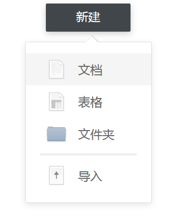

CSS 实现尖角样式
实现思路
实现一个CSS的尖角样式 ，思路为 用两个尖角，我是用的是一个before一个div、将其放到指定的位置，一个小一点作为尖角另外一个大一点作为尖角的border。然后使用position定位以及负的margin将其定位上去即可代码如下。
实现代码
1
2
3
4
5
6
7
8
9
10
11
12
13
14
15
16
17
18
19
20
21
22
23
24
25
26
27
28
29
30
31
32
33
34
35
36
37
38
39
40
41
42
43
44
45
46
47
48
49
50
51
52
53
54
55
56
57
58
59
60
61
62
63
64
65
66
67
68
69
70
71
72
73
74
75
76
77
78
79
80
81
82
83
84
85
86
87
88
89
90
91
92
93
94
95
96
97
98
99
100
101
102
103
104
105
106
107
108
109
110
111
112
113
114
115
116
117
118
119
120
121
122
123
124
125
126
127
128
129
130
131
132
133
134
135
136
137
138
139
140
141
142
143
144
145
146
147
148
149
150
| <!DOCTYPE html>
<html>
<head>
<title></title>
<meta charset="utf-8">
<style type="text/css">
body { /* 清除选择的颜色 */
-moz-user-select: none; /*火狐*/
-webkit-user-select: none; /*webkit浏览器*/
-ms-user-select: none;
user-select: none;
}
.drop-list-btn{
background:#41464b;
box-shadow:0 4px 12px 0 rgba(0,0,0,0.20);
border-radius:2px;
width:168px;
height:56px;
margin: 0 auto;
cursor: pointer;
}
.drop-list-btn span{
font-family:PingFangSC-Medium;
font-size:24px;
color:#ffffff;
letter-spacing:0;
line-height:24px;
text-align:center;
display: inline-block;
position: relative;
left: 50%;
top: 50%;
transform: translate(-50%,-50%);
height: 30px;
}
.drop-list{
margin: 0 auto;
background:#ffffff;
border:1px solid #dddddd;
box-shadow:0 4px 12px 0 rgba(0,0,0,0.10);
border-radius:2px;
width:249px;
height:319px;
}
.drop-list-item{
width:249px;
height:64px;
}
.drop-list-item:hover{
background:#f5f5f5;
}
.drop-list-item div{
height: 100%;float: left;
}
.drop-list-item div:nth-child(1){
width: 41px;
}
.drop-list-item div:nth-child(2){
width: 40px;background: url(icons/docs@2x.png) no-repeat content-box center;
}
.drop-list-item div:nth-child(3){
width: 23px;
}
.drop-list-item div:nth-child(4){
font-family:PingFangSC-Regular;
font-size:24px;
color:#666666;
letter-spacing:0;
line-height:24px;
text-align:left;
width: 96px;
}
.drop-list-item div:nth-child(4) span{
display: inline-block;top: 50%;transform: translateY(-50%);position: relative;
}
.drop-list::before {
border-right: 13px solid transparent;
border-bottom: 13px solid rgba(0,0,0,0.1);
width: 0px;
border-left: 13px solid transparent;
content: '';
margin-top: -13px;
position: relative;
top: -36px;
left: 119px;
}
.drop-list-triangle{ /*外面的三角形 底色用before*/
border-right:12px solid transparent;border-bottom:12px solid white;width: 0px;border-left:12px solid transparent;margin-top:-12px;position: relative;left: 119.5px;top: -22px;
}
</style>
</head>
<body>
<div class="drop-list-btn">
<span>新建</span>
</div>
<div class="drop-list" style="margin-top: 20px;">
<div class="drop-list-triangle" ></div>
<div class="drop-list-item" >
<div ></div>
<div ></div>
<div ></div>
<div >
<span >文档</span>
</div>
</div>
<div class="drop-list-item" >
<div ></div>
<div style="background: url(icons/chart@2x.png) no-repeat content-box center;"></div>
<div ></div>
<div >
<span >表格</span>
</div>
</div>
<div class="drop-list-item" >
<div ></div>
<div style="background: url(icons/folder@2x.png) no-repeat content-box center;"></div>
<div ></div>
<div>
<span >文件夹</span>
</div>
</div>
<div style="width:249px;height: 3px;margin: 8px 0px;">
<div style="border:1px solid #dddddd;width:190px;height:1px;position: relative;margin: 0 auto;"></div>
</div>
<div class="drop-list-item">
<div ></div>
<div style="background: url(icons/upload@2x.png) no-repeat content-box center;"></div>
<div ></div>
<div >
<span >导入</span>
</div>
</div>
</div>
<script type="text/javascript">
document.getElementsByClassName("drop-list-btn")[0].onclick = function (evt) {
var ele = document.getElementsByClassName("drop-list")[0];
if (ele.style.display=="none"){
ele.style.display="block";
}else{
ele.style.display="none";
}
}
</script>
</body>
</html>
|
效果如下：
